Use cases
Use cases for SocialHub CX
Typical customer service workflows across social media, WhatsApp, email and website chat – step by step in SocialHub CX.

Use cases by industry
Public transport
Handling disruption reports on social media and by email · Answering questions on subscriptions, Deutschlandticket and refunds · Passing praise and complaints to departments
Retail & loyalty
Working through request peaks after campaigns · Answering reviews and comments · Answering questions on points, rewards and partners
Banking & insurance
Moving social media requests into service in an orderly way · Routing service mailboxes by department
Public sector
Handling citizen requests from social media and mailboxes centrally · Clarifying responsibilities across departments
Utilities
Instalments, meter readings and moves: routing emails automatically · Supply outage on social media and by email
See your workflow live
In the demo we show the use cases with examples from your industry.
- German provider
- Hosted in Germany
- ISO/IEC 27001 (SocialHub)
- Hosting provider with BSI C5 attestation